Amarat yousif Fakhro
The group of three 'amarat (sing. 'amarah: storehouse) of the Fakhro family is located in the heart of the traditional Muharrag sug, not far from the Siyadi Shops. They consist of storage spaces for merchandise coming from the sea (to their western ends) and sold in the market (at their eastern ends). Each of the 'amarat contributes in a different way to the Pearling Narrative.
 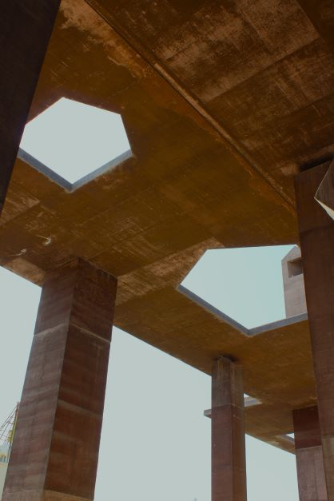
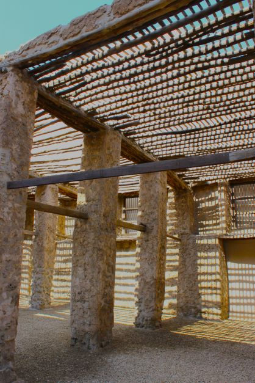
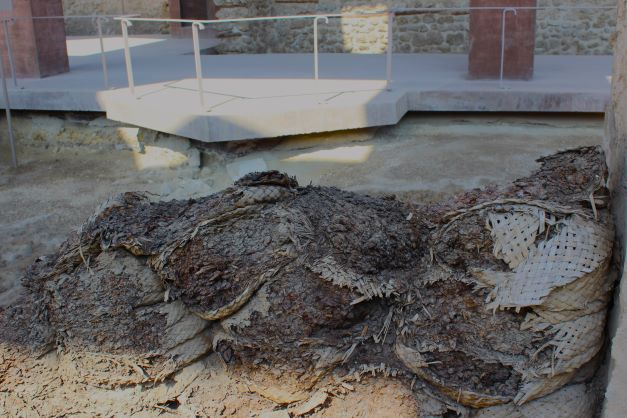
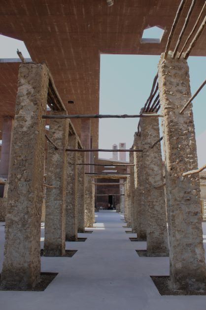
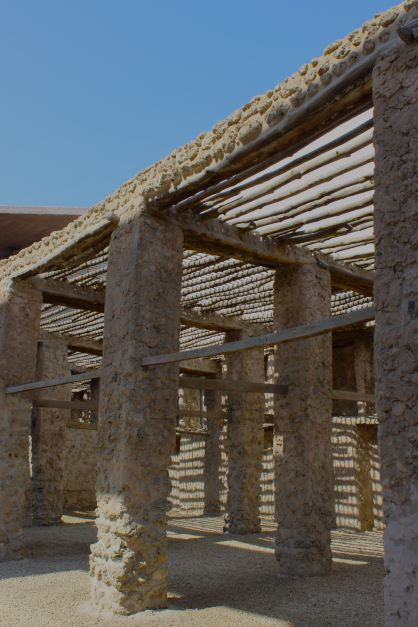
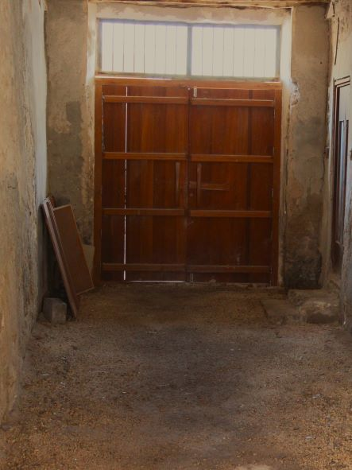
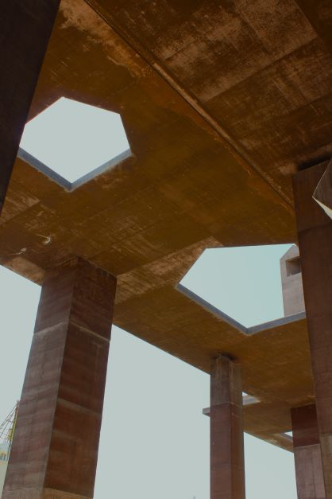
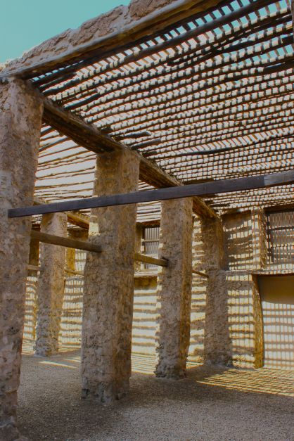
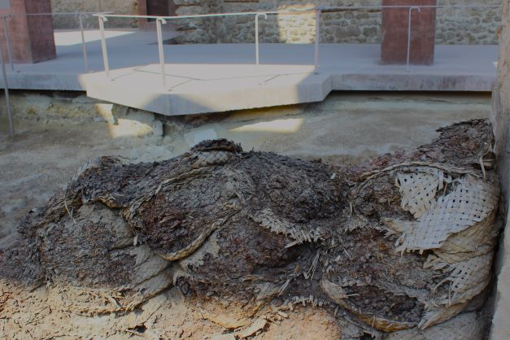
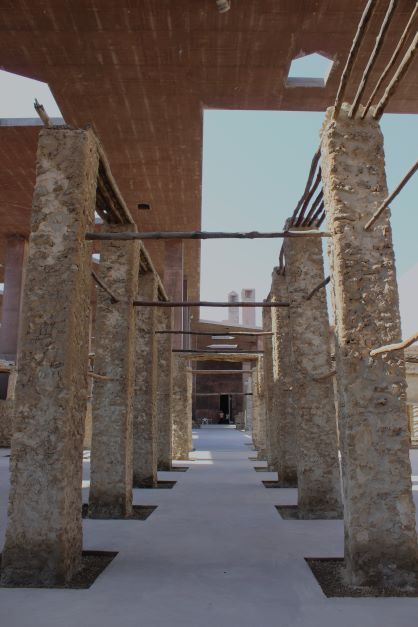
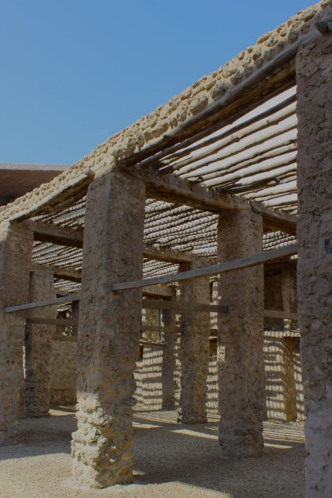
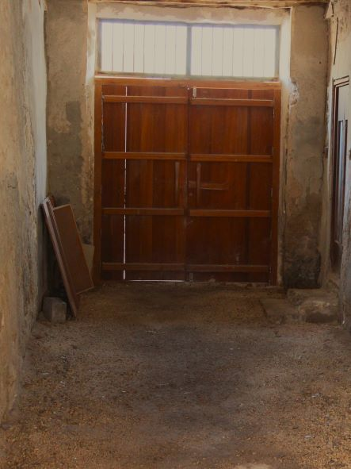
A madbasah is the traditional structure used to store dates, and to produce date syrup (debs). It consists of channels that support a mat made with the midrib of the palm tree leaf. Date bags are then piled over the mat and left to mature for days, sometimes under the sun. The syrup then naturally drops through the mat and seeps through the space between the sticks Into the channels. The slope of the channels guides the syrup to a clay pot or plaster-lined tank installed below ground in the corner.